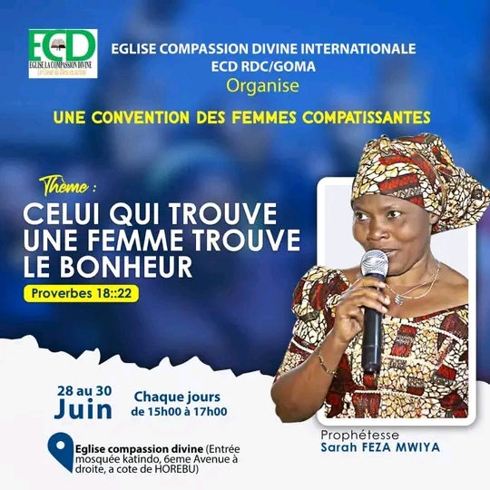

Nos programmes
Restez informés sur nos programmes hebdomadaires et sur les activités à venir.
| GOMA RD. Congo | BANGUI Centrafrique | CIBITOKE Burundi | |
|---|---|---|---|
| Lundi | 09H00 - 12H00 Prière d'intercession. | 15H00 - 16H00 Prière des serviteurs | |
| Mardi | 09H00 - 12H00 Prière pour toute l'Eglise. | ||
| Mercredi | 16H00 - 17H30 Prière. | 07h00 - 12h00 Enseignements et affermissement | |
| Jeudi | 15H00 - 17H00 Enseignements Bibliques et affermissement. | 15H00 - 17H00 Prière de toute l'Eglise. | |
| Vendredi | 15H00 - 17H00 Culte vespéral. | 16H00 - 17H30 Enseignements | |
| Samedi | 14H30 - 16H00 Repétition des chorales et évangélisation. | 10H00 - 15H00 Prière de toute l'Eglise. | |
| Dimanche | 09H00 - 12H00 Culte d'enseignement et adoration. | 08H00 - 11H00 Adoration. | 09H00 - 12H00 Adoration. |
Evénements à venir
Ne ratez plus aucun événement de l'Eglise. Confirmez-nous votre présence en cliquant sur le bouton "Je serai là"
Une convetion des femmes compatissantes
L'Eglise la Compassion Divine Internationale / Goma organise une convention des femmes compatissantes sous le thème : « Celui qui trouve une femme trouve le bonheur »
Préparez-vous chères femmes pour cet événement, du 28 au 30 Juin 2022 de 15h00 à 17h00.